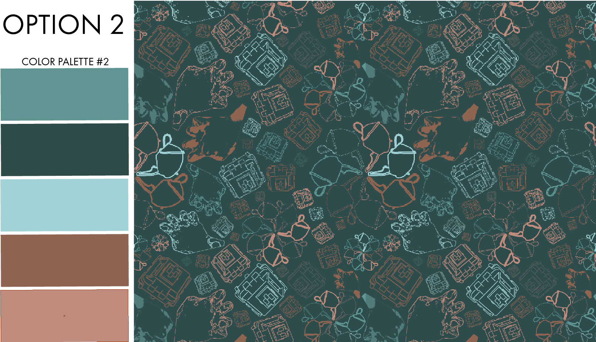
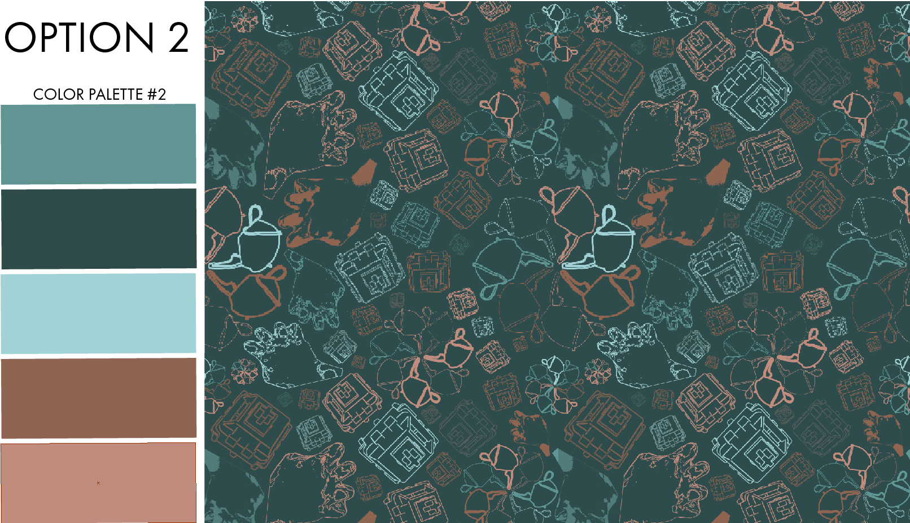

Visual Manipulation
CHALLENGE: The design goal was to create fabric
patterns using illustrator and photoshop to draw and
trace objects (one being a body part and the other
two being random objects.
SOLUTION: By manipulating the size, scale, color, line
weights, opacity, etc., I was able to design three
different patterns with the same three objects.


 
